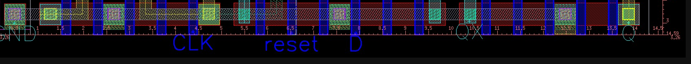
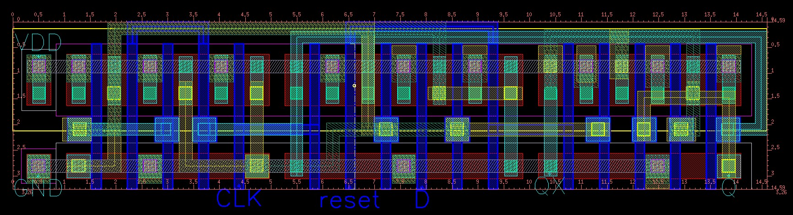

DFF 版圖與 ME4 分析
整理對你提供的 DFF layout 圖的判斷，以及 ME4 在 DFF 中的使用規則。
從外觀看是否為 DFF
版圖有 VDD、GND、CLK、reset、D、QX、Q，整體結構符合 DFF layout 的特徵。但功能是否正確必須靠 DRC/LVS/Post-sim 確認。

使用者提供的 DFF layout 圖

使用者提供的 DFF layout 圖
| Pin | DFF 是否需要 | 判斷 |
|---|---|---|
| VDD | 需要 | 有 |
| GND | 需要 | 有 |
| CLK | 需要 | 有 |
| reset | 需要 | 有 |
| D | 需要 | 有 |
| QX | 需要 | 有 |
| Q | 需要 | 有 |
ME4 能不能在 DFF / DIFF 上方？
可以。ME4 是高層金屬，可以經過 DIFF 上方，不代表短路。
| 狀況 | 是否可以 | 說明 |
|---|---|---|
| ME4 經過 DIFF 上方 | 可以 | 不同層，中間有絕緣層 |
| ME4 直接接 DIFF | 不可以 | DIFF 不能直接接高層金屬 |
| ME4 透過完整 via chain 接 DIFF | 可以 | DIFF→CONT→ME1→VIA1→ME2→VIA2→ME3→VIA3→ME4 |
| ME4 意外接到其他 net | 不可以 | LVS short/mismatch |
DFF layout 檢查點
| 檢查項目 | 原因 | 驗證方式 |
|---|---|---|
| Pin name/order | testbench 腳位固定 | LVS + HSPICE |
| reset 低態有效 | 作業要求 | WaveView |
| Q/QX 互補 | DFF 正反輸出 | WaveView |
| ME4 via chain | 避免 open/short | Laker q + LVS |
| PMOS body/NWELL | 避免 body/well 錯 | DRC/LVS |
| MOS W/L | 避免 property error | 量尺寸 |